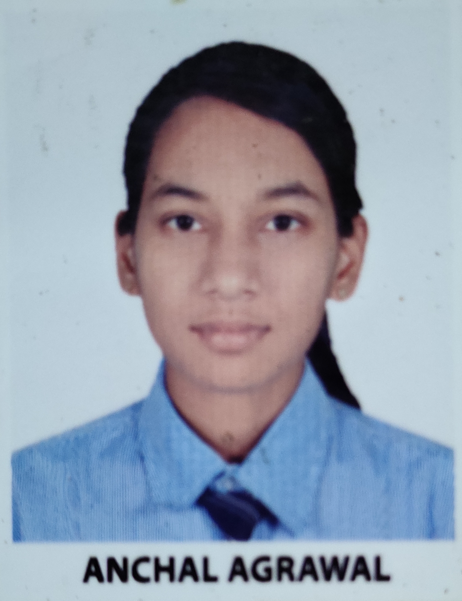

Summary:
I am interested to learn new skills and want to enhance my learnings.
Education:
- Schooling: Done my schooling from Aum Valley School affiliated to CBSE.I finishe my schholing in the year 2019 with a good percentage of 95.20%.
- I completed my 11th and 12th from the same school in the yaer 2021 with a percentage of 95%
- I have secured an AIR of 97 percentile in JEE Examination and was alloted a seat in IIEST,Shibpur in the year 2022.
- I have completed my second year in the branch of IT in 4 year B.Tech program.
Work Experience:
Skills:
- Data Structure And Algorithms
- Programming languages like C++, C.
- Basics of HTML.
- Basics of Machine Learning
Achievements:
- Placement Representative
- ONGC Scholar
- Secured highest CGPA in ETC branch in First Semester.
Hobbies
Contact